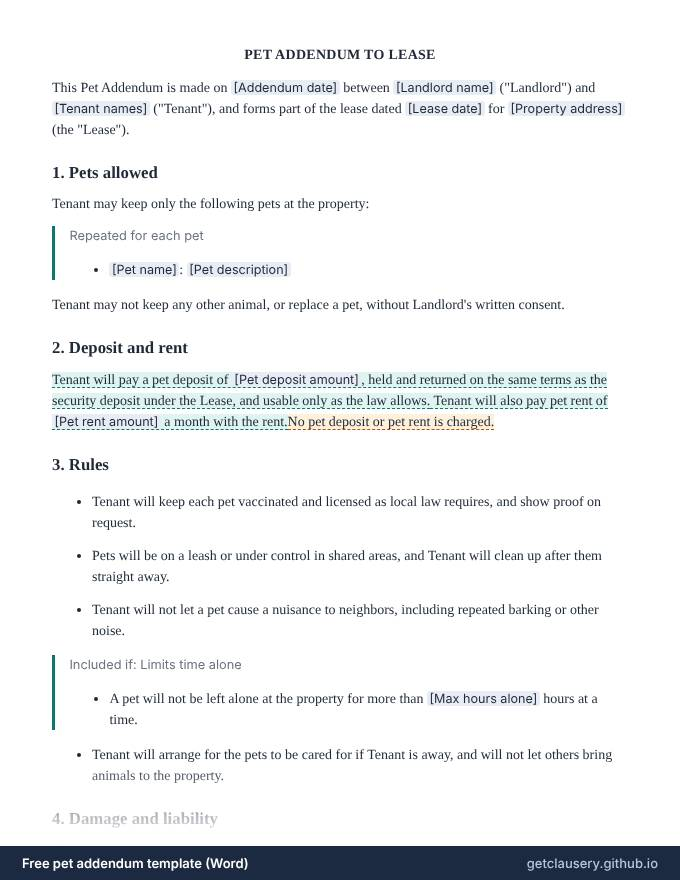

Pet addendum template — free, editable .docx
An addendum that lets a tenant keep pets under an existing lease: each pet, an optional pet deposit and monthly pet rent, rules on vaccinations, leashes, noise and time alone, responsibility for damage, optional insurance, and a clear exception for assistance animals.

Free, with unlimited documents and no sign-up. Your answers stay in your browser. Who it is for: Landlords allowing a tenant to get a pet, or to move in with one, without rewriting the whole lease.
Updated · Word (.docx) · Free to use and adapt
Need more than one? Download all 87 templates as one .zip file.
What is in the pet addendum
- Landlord, tenant and the lease it adds to
- Each pet, by name and description
- Optional pet deposit and pet rent
- Vaccinations, licences, leashes, waste and noise
- Optional limit on time left alone
- Damage and liability, with optional insurance
- Time to put a breach right before a pet must go
- Assistance animals excluded
- Signatures
Read the full template
This is the complete wording. [Labels] are filled in from your answers, and highlighted text only appears when it applies; hover over it to see when.
PET ADDENDUM TO LEASE
This Pet Addendum is made on [Addendum date] between [Landlord name] ("Landlord") and [Tenant names] ("Tenant"), and forms part of the lease dated [Lease date] for [Property address] (the "Lease").
1. Pets allowed
Tenant may keep only the following pets at the property:
Repeated for each pet
- [Pet name]: [Pet description]
Tenant may not keep any other animal, or replace a pet, without Landlord's written consent.
2. Deposit and rent
Tenant will pay a pet deposit of [Pet deposit amount], held and returned on the same terms as the security deposit under the Lease, and usable only as the law allows. Tenant will also pay pet rent of [Pet rent amount] a month with the rent.No pet deposit or pet rent is charged.
3. Rules
- Tenant will keep each pet vaccinated and licensed as local law requires, and show proof on request.
- Pets will be on a leash or under control in shared areas, and Tenant will clean up after them straight away.
- Tenant will not let a pet cause a nuisance to neighbors, including repeated barking or other noise.
Included if: Limits time alone
- A pet will not be left alone at the property for more than [Max hours alone] hours at a time.
- Tenant will arrange for the pets to be cared for if Tenant is away, and will not let others bring animals to the property.
4. Damage and liability
Tenant is responsible for any damage, cleaning or pest treatment caused by the pets, beyond normal wear and tear, and for any injury or loss they cause to others. Tenant will keep liability insurance covering the pets of at least [Insurance coverage amount] while they live at the property.
5. Breaking the rules
If Tenant breaks this Addendum and does not put it right within [Cure days] days of written notice, Landlord may require a pet to be removed from the property, as well as using any other remedy under the Lease and the law.
6. Assistance animals
This Addendum does not apply to assistance animals for people with disabilities, which are handled under fair housing law. No pet deposit or pet rent is charged for them.
Everything else in the Lease stays the same. If this Addendum and the Lease conflict about pets, this Addendum applies.
Signatures
____________________________ [Landlord name] (Landlord) Date: ______________
____________________________ [Tenant names] (Tenant) Date: ______________
The questions you answer
Clausery turns the template into a short questionnaire. Optional parts only appear when they apply.
| Question | Type | Asked when |
|---|---|---|
| Addendum date | Date | Always |
| Landlord name | Short text | Always |
| Tenant names | Short text | Always |
| Lease date | Date | Always |
| Property address | Long text | Always |
| Pets For each item: Pet name, Pet description | Repeating group | Always |
| Has pet deposit | Yes / no | Always |
| Pet deposit amount | Money | If “Has pet deposit” is yes |
| Has pet rent | Yes / no | Always |
| Pet rent amount | Money | If “Has pet rent” is yes |
| Limits time alone | Yes / no | Always |
| Max hours alone | Number | If “Limits time alone” is yes |
| Requires pet insurance | Yes / no | Always |
| Insurance coverage amount | Money | If “Requires pet insurance” is yes |
| Cure days | Number | Always |
Prefer to start from your own wording? Download the Word file, edit it, keep the {tags}, and upload it to Clausery. See the template syntax.
Questions
Can I charge a pet deposit and pet rent?
In most states, yes, within any limits. Some states count a pet deposit towards the cap on security deposits, and a few restrict non-refundable pet fees, so check the rules where the property is.
Does this apply to service animals and emotional support animals?
No. Under fair housing law, assistance animals for people with disabilities are not pets, and landlords generally cannot charge a pet deposit or pet rent for them.
Do we need a new addendum for a new pet?
Yes. The addendum lists each pet, and the tenant needs written consent to add or replace one. Sign a new addendum, or add the new pet in writing.
Guide: What to include in a residential lease agreement
Related templates
Browse all 87 free templates by category
This template is a general sample and not legal advice. Laws vary by jurisdiction; have it reviewed before use.